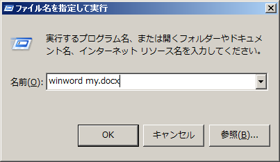
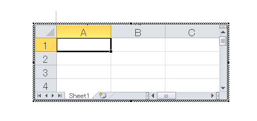

(※ 2012 年 2 月 14 日に Japan Office Developer Support Blog に公開した情報のアーカイブです。)
こんにちは、Office 開発系サポート 森 健吾 (kenmori) です。
今回の投稿では、Office のプロセス インスタンス制御というテーマにて記載いたします。
Office アプリケーションは MDI (Multi Document Interface) アプリケーションとして開発されており、1 つのプロセスで複数のドキュメントを扱えるように実装されています。
様々な場合において、既存のプロセス インスタンスでドキュメントを開くか、新しいプロセスを起動してドキュメントを開くかを制御しています。
この動作は、Office の自動化プログラムを実装するにあたり、色々と影響があるため、事前に把握しておいた方が良い内容と思い、ご紹介させていただくに至りました。
新規 / 既存プロセスで開く操作に関する一覧
| No | 操作 | Word | Excel | PowerPoint |
|---|---|---|---|---|
| 1 | プログラムを起動する | 既存 | 新規 | 既存 |
| 2 | エクスプローラからファイルを開く | 既存 | 既存 | 既存 |
| 3 | オブジェクト生成 (CreateObject) | 新規 | 新規 | 既存 |
| 4 | OLE 埋め込みオブジェクト | 既存 | 既存 | 既存 |
・上記記載の通り、各 Office アプリケーションで動作が異なります。
・“新規” と記載したものは常に新規プロセスが起動します。”既存” と記載した箇所は、プロセスが起動している場合は既存プロセス上でファイルを開き、なければ新規プロセスを起動します。
・上記設定値はあくまで既定値であり、レジストリや設定画面等で動作を変更できる場合があります。
以下に各操作シナリオがどのような場合に当てはまるかをご紹介いたします。
1. プログラムを起動する
プログラム名を指定して起動する場合、新規起動したプロセス上にて新規プロセスのままドキュメントを開く動作を継続するか、既存プロセスでドキュメントを開くようにするかを判断する動作となります。
主な操作
・スタート メニューから Office アプリケーションを開く。
・ファイル名を指定して実行やコマンド ラインからプログラムを起動する。
・Process.Start メソッドで、プロセス名を指定して起動する。
例)

補足 : winword.exe /w <ファイル名> を指定すると、別プロセスで Word を起動できます。
2. エクスプローラからファイルを開く
エクスプローラからファイルを開く場合、Office アプリケーションがインストール時に登録した Shell拡張などにより、既存のプロセス インスタンスに対して DDE 通信などを使用してファイルを開くよう通知するなどの動作が実施されます。
主な操作
・エクスプローラでファイル (*.doc, *.docx, *.xls, *.xlsx, *.ppt, *.pptx など) をダブルクリックして開く。
・Process.Start メソッドで、プロセス名を指定せずにファイルを開く。
3. オブジェクト生成 (CreateObject)
CreateObject 関数などの COM オブジェクト生成の処理では、Office アプリケーションが公開している COM オブジェクトの Instancing プロパティの値に依存します。
・Instancing プロパティが SingleUse の場合は新規プロセス (オブジェクト) が起動します。
・Instancing プロパティが MultiUse の場合は既存プロセス (オブジェクト) が使用されます。
主な操作
・CreateObject 関数 (VB, VB.NET, VBScript など) で COM オブジェクトを生成する。
・Activator.CreateInstance(Type) 関数 (C# など) で COM オブジェクトを生成する。
・Office PIA で new 演算子を使用して、オブジェクトを生成する。
参考情報
タイトル : Office オートメーション サーバーの GetObject および CreateObject の動作
アドレス : https://support.microsoft.com/ja-jp/help/288902
4. OLE 埋め込みオブジェクト
OLE 埋め込みオブジェクトを使用する際には、既存プロセスがすでに存在する場合は、そのプロセス上でドキュメントを開き、埋め込みオブジェクトを使用するアプリケーション側に描画されます。
主な操作
・Word の中に Excel ワークシート シートを挿入する。

このあたりの動作については、ランニング オブジェクト テーブル (ROT) やモニカーなどの動作を認識している場合は、より詳細な理解ができると思います。この投稿では、専門用語などをなるべく控え、一般の開発者様向けになるべくイメージを持っていただくように注意して記載しておりますのでご了承ください。
Office オートメーションで実際に上記のようにオブジェクトが再利用される動作は、後に記載する自動メモリ管理を擁する .NET Framework 上で動く Office自動化アプリケーションと相性が悪く、様々な問題を引き起こすことがあります。
このことから、生成されたオブジェクトが再利用され、OLE サーバーとして既存プロセスが使用されるパターンについては、ある程度事前に認識していただき、開発やトラブルシューティングに役立てていただけますと幸いです。
今回の投稿は以上となります。
本情報の内容 (添付文書、リンク先などを含む) は、作成日時点でのものであり、予告なく変更される場合があります。